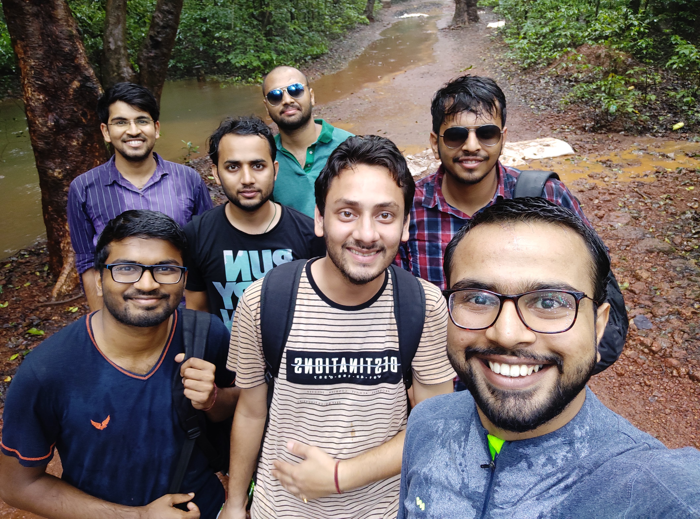

August 4, 2019
In the eighth article of the blog series
Pranav Kulkarni, an undergraduate student in
the Department of Mechanical Engineering from the Y15 batch
shares his experience with application procedure to graduate
schools in Europe before he finally got admitted to “Aalto
University” for his graduate studies.
Aalto university is one of IITK MOUs, composed of six
schools with close to 17,500 students and 4,000 staff
members, making it Finland's second largest university. The
main campus of Aalto University is located in Otaniemi,
Espoo, where the engineering schools as well as the bachelor
programs of the School of Business operate.
As I entered L13, a little later than the stipulated time, I
saw numerous eager faces occupying not just all the chairs but
also the floor to listen to how to get a good Masters or PhD
position after graduation. This was a session organised by the
AnC to help students get acquainted with the application
process for higher education, and I was one of the speakers.
Having reached late, I was to speak to the audience at the
end, and upon listening to the experiences of my fellow
speakers, I realised how different my path had been as
compared to theirs. This article is just an attempt to ensure
that those who take the same road as mine don't feel that not
being able to achieve something is the end of the world. Trust
me, it's not. :)

First of all, let me introduce myself. I, Pranav Kulkarni, am
an alumnus (feels proud to say this :P) of the Department of
Mechanical Engineering, IITK. I will be pursuing my Masters in
Mechanical Engineering from Aalto University in Finland
starting September 2019.
I believe that if one has a strong reason to reach a goal, no
matter how many obstacles hinder the path, one will get
through them eventually. I am well aware that this is not
supposed to be a motivational article but the aforementioned
statement sums my journey from IITK to Aalto. Before I tell
you why it was so, let me outline the application process when
it comes to the European Universities. Although Devansh
Saraswat's blog talks about the application process for the
United States' universities, most of the elements are similar
when it comes to applying to European universities. However,
there are certain differences:
 Now let me tell you how I ended up deciding to go to Aalto. It
was the summer after the sixth semester and I was interning at
a company in Pune. I was really interested in the work that
the company did, however the projects assigned to me did not
interest me at all. I met a fellow intern from IITR and he was
working on a different project. As we shared our experience
during daily breaks, he informed me that the software which
the company was selling (and he was using) kept violating
several fundamental physical laws (for example, mass balance
in chemical reactions). Further, the software I was working on
did not give consistent results for the same system
parameters. I was pretty bummed by this and was also
uncomfortable in the work environment. I knew I was interested
in research but I had never given it a serious thought. The
intern experience pretty much confirmed to me that a higher
education was necessary. However, I was not ready for
committing five years to research right away considering I did
not have a research experience of more than 3 months. Thereby
to get a gist of research, a master's was an ideal option for
me. I did consider converting into a dual degree but upon
talking with a few seniors and a few professors, going abroad
seemed to be a better option. Also, the professor I wanted to
work with, had I converted to dual, was already taken by my
batch mates as their supervisor.
Now let me tell you how I ended up deciding to go to Aalto. It
was the summer after the sixth semester and I was interning at
a company in Pune. I was really interested in the work that
the company did, however the projects assigned to me did not
interest me at all. I met a fellow intern from IITR and he was
working on a different project. As we shared our experience
during daily breaks, he informed me that the software which
the company was selling (and he was using) kept violating
several fundamental physical laws (for example, mass balance
in chemical reactions). Further, the software I was working on
did not give consistent results for the same system
parameters. I was pretty bummed by this and was also
uncomfortable in the work environment. I knew I was interested
in research but I had never given it a serious thought. The
intern experience pretty much confirmed to me that a higher
education was necessary. However, I was not ready for
committing five years to research right away considering I did
not have a research experience of more than 3 months. Thereby
to get a gist of research, a master's was an ideal option for
me. I did consider converting into a dual degree but upon
talking with a few seniors and a few professors, going abroad
seemed to be a better option. Also, the professor I wanted to
work with, had I converted to dual, was already taken by my
batch mates as their supervisor.
And thus, even before my internship ended, I started to
shortlist universities. I went through the QS rankings and
focussed mainly on European universities. However, I also
shortlisted some American universities which had a program of
my interest. I went as low as 150 because there were fewer
universities from Europe in that list. I almost had a rough
data of about 60 universities after which I added the
selection criteria for these universities to this data. Apart
from what I've already mentioned above, here are some
interesting facts:
This list is pretty much endless but since the aforementioned
countries could be popular destinations, I thought it would be
a good idea to mention here.
 I now decided to give the TOEFL and GRE towards the end of
August and the first week of September respectively. I did
have the option of giving the exams on consecutive days, but I
felt that giving the TOEFL earlier would give me a good boost
of confidence and I knew both these exams were pretty tiring.
I prepared for the GRE verbal through the Magoosh GRE
Flashcards app, and gave a few mock tests available online and
also those which one gets upon registering for the exam. I
prepared for the TOEFL through a book by Princeton review
(Cracking the TOEFL iBT). Although it was an expensive
purchase, I felt it was important for me considering how
little knowledge I had about their grading policies. It gave
me a really good idea as to what was expected and needless to
say, I did get a satisfactory result. Also, I am well aware
that most will consider the GRE quant to be very easy, I'd
suggest you to practice it. A friend of mine, did not even see
the kind of questions he'd be facing apart from the mock tests
he gave and ended up scoring just about 150 something in
quant. In short, don't be overconfident about the quant
section.
I now decided to give the TOEFL and GRE towards the end of
August and the first week of September respectively. I did
have the option of giving the exams on consecutive days, but I
felt that giving the TOEFL earlier would give me a good boost
of confidence and I knew both these exams were pretty tiring.
I prepared for the GRE verbal through the Magoosh GRE
Flashcards app, and gave a few mock tests available online and
also those which one gets upon registering for the exam. I
prepared for the TOEFL through a book by Princeton review
(Cracking the TOEFL iBT). Although it was an expensive
purchase, I felt it was important for me considering how
little knowledge I had about their grading policies. It gave
me a really good idea as to what was expected and needless to
say, I did get a satisfactory result. Also, I am well aware
that most will consider the GRE quant to be very easy, I'd
suggest you to practice it. A friend of mine, did not even see
the kind of questions he'd be facing apart from the mock tests
he gave and ended up scoring just about 150 something in
quant. In short, don't be overconfident about the quant
section.
After this, I started working on the SOP. I must've written
like 6 or 7 drafts before finalising my essay. So don't bother
too much if you don't end up with a perfect SOP in your very
first attempt. I had to proofread the essay from about 3-4
people. Here I'd like to add, don't ask too many people to
proofread your SOP. You'll probably end up getting confused
over the suggestions from too many people. Just ask a handful
of people who are good in English and who are acquainted with
you as a person. Also, PLEASE refrain from getting someone
else to write your SOP as this is not only a malpractice but
it also will never show your true self to the university. It
would also be a good idea to mention the name and work of a
few professors with whom you'd like to work. That is, make
every SOP specific to the university you're applying.
I met with a very interesting situation during the application
to Aalto. Two days before the deadline, I found that I was
supposed to send hard copies to the university but since it
would've taken about 4-5 days for the documents to reach the
university, I had almost given up on applying. Fortunately, I
found an acquaintance studying in Aalto who agreed to deliver
my documents to the university. It was indeed a fortuitous
episode, considering I will be studying there for the next
couple of years. I was more inclined towards European
universities because I did not want to burden myself with a
debt. Working after graduation to repay the loan did not seem
like a good idea. Having said that, I had to reject the admits
from CMU, University of Amsterdam and Imperial College London.
Although these universities were far better in ranking as
compared to Aalto, I did not want to be a burden on my family,
financially. I believe that moving out of your comfort zone is
the only way towards personal growth and I had already made up
my mind to study and earn independently.
Amidst all this, I was also appearing for placements and
planning on giving the CAT on the insistence of my parents. On
day 7 of the placement drive, I was placed in L&T and I also
obtained a satisfactory CAT percentile thus a call from IIM
Indore. Since I was hell bent on going for Master's, I had to
talk it out with my parents who wanted their son to be an
IIT-IIM graduate. Although it seemed difficult at first, they
finally agreed to let me study abroad.
Nitik had asked me to write this article towards the end of
May. However, due to some unforeseen circumstances I could not
write this that time. Nevertheless, it's better late than
never and as long as this blog is, I hope it was helpful to at
least some of you. I would like to end by saying that one
should never be afraid of following their heart no matter how
difficult things might get, your heart will guide you through
all the difficulties! All the very best! You can reach out to
me on Facebook, or email me at
pskulk6497@gmail.com. We can talk more on
this and I am always up for a discussion on life ;)
Thank you! :)